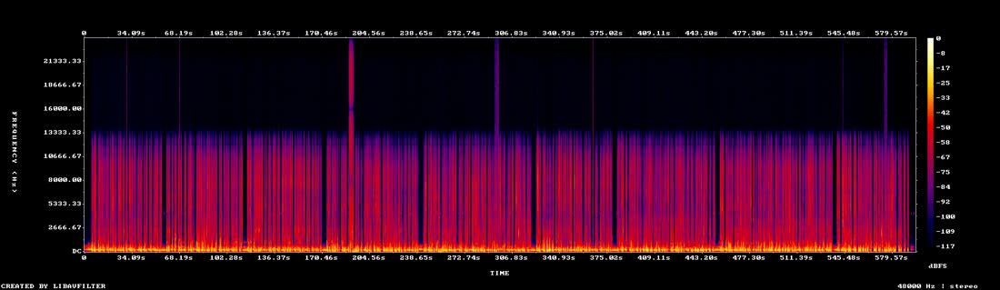
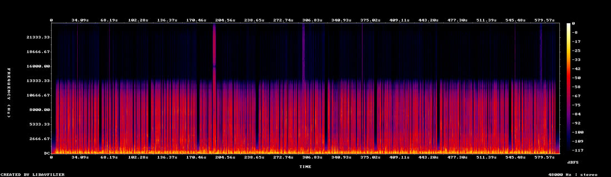

| 確認項目 | 結果 |
|---|---|
| 映像は元の男の子版のまま（再エンコードなし・1920x1080・9:56） | 同じ |
| 声：クリップごとの音量 -30.3〜-15.1 dB → -22.3〜-19.0 dB | 実測 |
| 声：80Hz以下を切る・230Hz -2dB・3kHz +2dB・軽い圧縮 | 実施 |
| 効果音：前は10個全部ピーク -20.3 dB（頭打ち）→ カチッ -15／バチン -10／水・うなり -19／ピピッ・カチカチ -23 dB | 実測 |
| 効果音の位置：言葉の 0.1〜0.35 秒前に置いた（10か所） | 実施 |
| BGM：冒頭2.5秒は無音→6秒で満タン／場面カード -22 LUFS／声の下 -35 LUFS／最後6秒で抜く（-47.5） | 実測 |
| 虫の声（4.3kHz・声と同じ帯）を抜いた／部屋の空気は -48 LUFS に | 実施 |
| 耳で聴いた確認 | 未確認（音を鳴らす操作は禁止） |